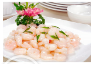
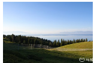

杭州特色美食介绍，吃货的人生不需要解释。上有天堂，下有苏杭，杭州的美食每道都是经典，
一直被称作天堂美食之府，杭帮菜源远流长，博采各大菜系之所长，是中国八大菜系之一，这里讲
究南北口味交融，烹饪时轻油腻轻调料，口感鲜嫩，口味纯美，色、香、味俱全
西湖十景形成于南宋时期，基本围绕西湖分布，有的就位于湖上。苏堤春晓、曲苑风荷、平湖秋月、
断桥残雪、柳浪闻莺、花港观鱼、雷峰夕照、双峰插云、南屏晚钟、三潭印月，西湖十景个擅其胜，组
合在一起又能代表古代西湖胜景精华，所以无论杭州本地人还是外地山水客都津津乐道，先游为快

苏堤春晓 苏堤南起南屏山麓，北到栖霞岭下，全长近三公里，她是北宋大诗人苏东坡任杭州知州时，
疏浚西湖，利用挖出的葑泥构筑而成。后人为了纪念苏东坡治理西湖的功绩将她命名为苏堤。长堤卧波，
连接了南山北山，给西湖增添了一道妩媚的风景线。南宋时，苏堤春晓被列为西湖十景之首，元代又称之为“六桥烟柳”而列入钱钱十景，足见她自古就深受人们喜爱。